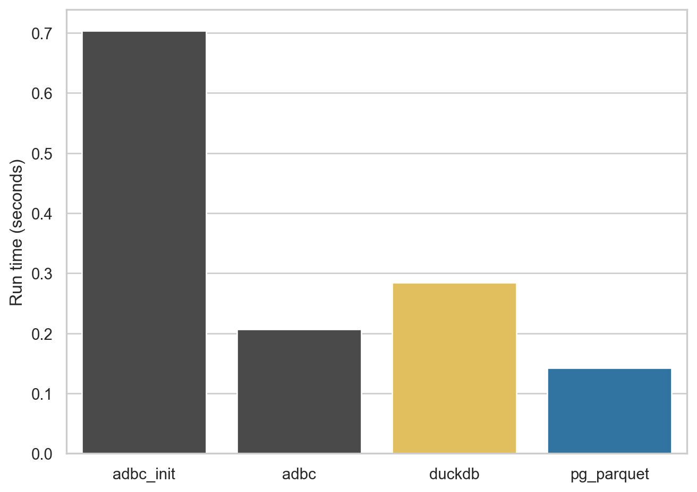
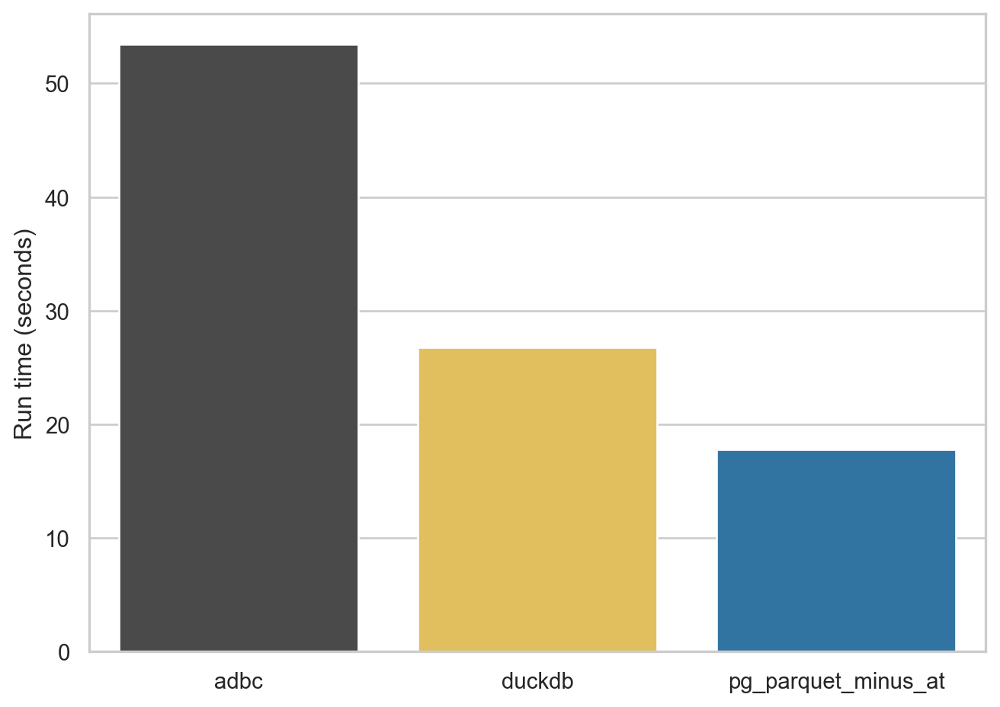
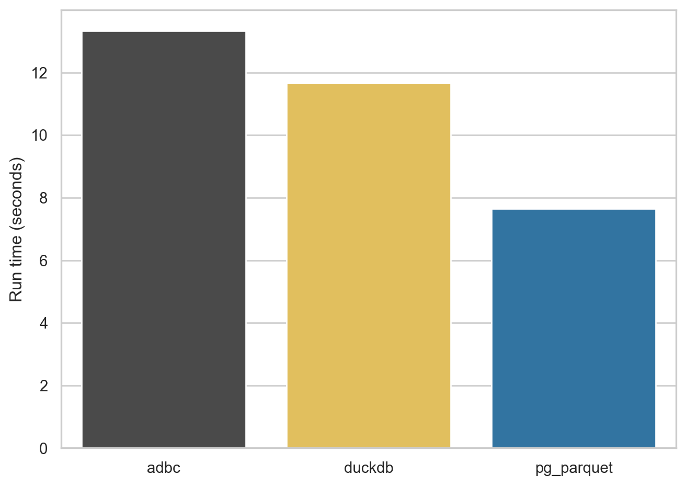

import pandas as pdGetting data out of Postgres
Python
Parquet
db2pq
benchmarks
PostgreSQL
Abstract
The Arrow Parquet file format has emerged in recent years as a key enabler of several technologies that have the potential to revolutionalize data analysis. For example, Polars is a “next-generation” data frame library that is much faster and more memory-efficient than pandas, the dominant data frame library for Python. However, the performance and efficiency of Polars depends on having the data in an efficient form such as is offered by the Parquet format. Polars really loses its edge when the data it wants are located in a relational database. In such a case, a natural question is: How do get data out of the database and into Parquet files?
This note explores a few ways of getting Parquet files from a PostgreSQL database, showing how to use them and comparing them with each other.
1 PostgreSQL
Exactly fifteen years ago, I was looking for a place to store my data that didn’t require SAS, or zillions of Stata files. After dabbling with SQLite and MySQL, I landed on PostgreSQL as the best system for storing my data. PostgreSQL allowed me extremely reliable storage of large amounts of data with fast access from R, Python, Stata and more.
The challenge back then was: How do I get my data into PostgreSQL? At the time, I was a faculty member at Northwestern University and a lot of my data came from Wharton Research Data Services, more commonly referred to as WRDS (pronounced “words”), and at that time WRDS provided data as SAS data files.
To get data from SAS data files into PostgreSQL, I used SAS PROC EXPORT to create CSV files and the PostgreSQL commands to get the data from the CSV files into PostgreSQL. Over time, this approach morphed into Perl scripts, then Python scripts, and finally the Python package wrds2pg, which was published on PyPI in April 2020. This package essentially runs SAS code that emits CSV data that is piped directly in to PostgreSQL.
When I first started using PostgreSQL, I remember I often had to compile it from source and it was pretty complicated. Today, I can just install Postgres.app using a point-and-click package and I can have a PostgreSQL database running with the simplest defaults ready to receive data in minutes.1
2 What’s the deal with Parquet?
One of the cool things about Parquet files is that any modern data science tool can work with them. Here I consider pandas, Polars and DuckDB.
2.1 pandas
If you are a user of Python for data analysis, no doubt you do a lot of work with pandas, which has been the de facto standard data frame library in Python since about 2012.
Unlike systems such as Stata or SAS, there is no “pandas data file” format as such. My impression is that many pandas users store data as CSV files. Here I will focus on crsp.msf_v2, a data set that is at about the sweet spot in terms of size and complexity for illustrating some key ideas. If I have crsp.msf_v2 as a CSV file, I can read it in using pd.read_csv():
%%time
msf_v2 = pd.read_csv("msf_v2.csv", low_memory=False)CPU times: user 16.5 s, sys: 1.91 s, total: 18.4 s
Wall time: 18.7 sBut if I had it as a Parquet file, I might be impressed with the performance of pd.read_parquet():
%%time
msf_v2 = pd.read_parquet("msf_v2.parquet")CPU times: user 7.93 s, sys: 7.14 s, total: 15.1 s
Wall time: 15.5 s2.2 Polars
OK, I would only be impressed if I’d never used Polars, but I have used it and I import it here.2
import polars as plNow, how does pl.read_parquet() do with this file?
%%time
msf_v2 = pl.read_parquet("msf_v2.parquet")CPU times: user 1.14 s, sys: 1.96 s, total: 3.1 s
Wall time: 2.17 sAgain, if I didn’t know Polars, I might be impressed. But in general you don’t want to use something as slow as pl.read_parquet() for many tasks. Instead, just use pl.scan_parquet().
%%time
msf_v2 = pl.scan_parquet("msf_v2.parquet")CPU times: user 685 μs, sys: 54.3 ms, total: 55 ms
Wall time: 55.1 msOK, now I’m starting to be impressed. The surprising performance of pl.scan_parquet() comes from the fact that it’s not actually reading all the data into memory. And this saves both time and memory.
Why is this helpful? Well, the reality is that we rarely want all the columns or all the rows, and the Parquet file format allows Polars to quickly pull in precisely the data that the analyst wants. Suppose we were interested in data from 2023 and just wanted returns and prices. This will do the trick:
%%time
msf_v2_2023 = (
msf_v2
.filter(pl.col("mthprcdt").dt.year() == 2023)
.select("permno","mthprcdt", "mthret", "mthprc")
.collect()
)CPU times: user 58.6 ms, sys: 12.6 ms, total: 71.2 ms
Wall time: 33.9 msAnd to prove that something happened, let’s look at the data:
msf_v2_2023
shape: (113_695, 4)
| permno | mthprcdt | mthret | mthprc |
|---|---|---|---|
| i32 | date | decimal[10,6] | decimal[13,6] |
| 10026 | 2023-01-31 | -0.042816 | 143.300000 |
| 10026 | 2023-02-28 | -0.014585 | 141.210000 |
| 10026 | 2023-03-31 | 0.054785 | 148.220000 |
| 10026 | 2023-04-28 | 0.033599 | 153.200000 |
| 10026 | 2023-05-31 | 0.004896 | 153.950000 |
| … | … | … | … |
| 93436 | 2023-08-31 | -0.034962 | 258.080000 |
| 93436 | 2023-09-29 | -0.030456 | 250.220000 |
| 93436 | 2023-10-31 | -0.197346 | 200.840000 |
| 93436 | 2023-11-30 | 0.195379 | 240.080000 |
| 93436 | 2023-12-29 | 0.034988 | 248.480000 |
So, if msf_v2_2023 were what we wanted, Polars gets it us hundreds of times faster than using pandas does, and while using much less RAM.3 These differences are probably not such a big deal with “medium-sized” tables such as crsp.msf_v2. But, if you’re working with larger data, it can quickly become simply impossible to work with data in pandas without using various complicating approaches, such as batching analyses and pasting together the results.4
2.3 DuckDB
Another tool that works well with Parquet files is DuckDB. DuckDB offers a rich SQL covering much of what PostgreSQL and in many areas even more. Unlike PostgreSQL, one does not need to set up a server to use DuckDB. I can simply import the library.
import duckdbThen I can use the duckdb.read_parquet() function to do much the same thing as pl.scan_parquet().5
%%time
msf_v2 = duckdb.read_parquet("msf_v2.parquet")CPU times: user 909 μs, sys: 1.19 ms, total: 2.1 ms
Wall time: 2.69 msAnd much like with Polars I can then quickly get precisely the data I need. There are many ways to work with DuckDB and one interface uses SQL.6 The .pl() at the end returns a Polars data frame (.df() would give me a pandas data frame).
%%time
msf_v2_2023 = duckdb.sql("""
SELECT permno, mthprcdt, mthret, mthprc
FROM msf_v2
WHERE year(mthprcdt) = 2023
""").pl()CPU times: user 73.7 ms, sys: 11.1 ms, total: 84.8 ms
Wall time: 25.8 msFrom the following, we can see that we’ve got the same data we got through the Polars path above:
msf_v2_2023
shape: (113_695, 4)
| permno | mthprcdt | mthret | mthprc |
|---|---|---|---|
| i32 | date | decimal[10,6] | decimal[13,6] |
| 10026 | 2023-01-31 | -0.042816 | 143.300000 |
| 10026 | 2023-02-28 | -0.014585 | 141.210000 |
| 10026 | 2023-03-31 | 0.054785 | 148.220000 |
| 10026 | 2023-04-28 | 0.033599 | 153.200000 |
| 10026 | 2023-05-31 | 0.004896 | 153.950000 |
| … | … | … | … |
| 93436 | 2023-08-31 | -0.034962 | 258.080000 |
| 93436 | 2023-09-29 | -0.030456 | 250.220000 |
| 93436 | 2023-10-31 | -0.197346 | 200.840000 |
| 93436 | 2023-11-30 | 0.195379 | 240.080000 |
| 93436 | 2023-12-29 | 0.034988 | 248.480000 |
3 Getting data into Parquet form
In late 2023, I decided to make a “Parquet path” for the book I was then working on Empirical Research in Accounting: Tools and Methods, which was later published with CRC Press and which used R for data analysis. This “Parquet path” combined Parquet files with DuckDB and the dbplyr library in R to create a an alternative to the main “PostgreSQL path” of that book with only very minor tweaks to the code.
For this purposes, I pulled together a quick-and-dirty package db2pq, which creates Parquet files from PostgreSQL sources, including special functions to manage a local repository of WRDS data.7
Recently, I have noticed a lot of buzz around ADBC, which stands for Arrow Database Connectivity. The Apache Arrow project is closely related to the Apache Parquet project and I figured that that ADBC might provide a better way to get data from PostgreSQL to Parquet files.
In this note, I give some first impressions of using ADBC for this purpose and compare it with two alternative approaches.
3.1 Method 1: The DuckDB path of db2pq
The db2pq Python package allows a user to export a table from PostgreSQL to Parquet with a number of options, including the ability to select certain columns or filter only rows meaning certain conditions. It also allows the user to modify data types (e.g., have a floating-point number be read as an integer).
The main “engine” of db2pq has DuckDB read data from PostgreSQL and produce batches of Arrow output that are written to disk. The batching is necessary to ensure that large tables can be processed without swamping the memory of the user’s computer.
While DuckDB supports writing directly to Parquet files, when I worked with this in 2023, I found it very difficult to prevent DuckDB from flooding RAM, and so I implemented a suite of functions that make up the core of the db2pq package.
The db2pq package also offers other goodies, such as only writing files when the data in PostgreSQL is newer than that in the Parquet file, as illustrated here:
from db2pq import wrds_update_pqwrds_update_pq("msf_v2", "crsp")Updated crsp.msf_v2 is available.
Beginning file download at 2026-03-26 19:56:53 UTC.
Completed file download at 2026-03-26 20:00:28 UTC.wrds_update_pq("msf_v2", "crsp")crsp.msf_v2 already up to date.3.2 Method 2: The ADBC path of db2pq
Last night, I decided to add an ADBC “engine” to db2pq. I was interested to know whether it would deliver better performance. It turns out that it doesn’t—at least, not yet—but it was a useful exercise to understand a little more about ADBC.
To use the ADBC engine with db2pq, I simply say engine="adbc" when calling wrds_update_pq().
wrds_update_pq("msf_v2", "crsp", engine="adbc")crsp.msf_v2 already up to date.Here I discuss two among several things I learnt about ABDC. First, the ADBC drivers incur a significant one-time cost when setting a database for connection. As we will see, this cost is a half-second on my computer, but over 20 seconds for the WRDS server. I infer that ADBC driver wants to know everything about the database it is connecting to before doing any work and it takes a lot longer for the WRDS database to tell its story that it does for my cheerful little home database.8
The second thing I learnt is that the ADBC drivers are very conservative when it comes to mapping data types. For example, the mthret column from the crsp.msf_v2 table that we saw above is stored in PostgreSQL as NUMERIC(10, 6), which means its a precise representation of a number with 10 digits, 6 of which come after the decimal point. You might think that the ABDC driver would immediately think “hey, that’s the same thing as pa.decimal128(10, 6)” (here pa stands for pyarrow, the Python package for Arrow). But instead, the driver documentation for the ADBC driver for PostgreSQL states that “NUMERIC types are read as the string representation of the value, because the PostgreSQL NUMERIC type cannot be losslessly converted to the Arrow decimal types.”
In implementing the ADBC “engine”, I tweaked the implementation of functions such as wrds_update_pq() so that the one-time cost of setting up a database for connections with ADBC only happens once in a Python session. This is often fine even if that set-up takes more than 20 seconds because the Python session will run for minutes or even hours to download data.
I also gave the user the flexibility to specify how NUMERIC types are handled using the numeric_mode argument. With numeric_mode="float64" the values are cast by PostgreSQL to DOUBLE PRECISION before the ADBC driver sees them, so they end up as Float64 types. If numeric_mode="decimal" the values are given to the ADBC driver as text, but these values are converted to nearest Arrow decimal types using the precision-scale metadata for the columns provided by PostgreSQL. Finally, numeric_mode="text" falls back to the default handling described by the Arrow documentation above.
3.3 Method 3: The pg_parquet PostgreSQL extension
The final contender is the pg_parquet PostgreSQL extension. The Postgres.app site offers a number of PostgreSQL extensions. These “are very easy to install – just download and double click the installer package! After restarting the server [also very easy with Postgres,app], you can enable them with the CREATE EXTENSION command.””
The pg_parquet PostgreSQL extension is one of several made available on the Postgres.app website. There it says: “Apache Parquet is gaining popularity as an interchange format for datasets. This extension allows you to read and write Parquet files using the COPY command. The extension was developed by CrunchyData and documentation is available at github.com/CrunchyData/pg_parquet.”
With this extension I can run SQL like this:
COPY crsp.msf_v2 TO '/tmp/msf_v2.parquet' (format 'parquet')An obvious limitation of pg_parquet is that you need to have administrative privileges for the database you want to get data from. So clearly it’s not useful to a user of the WRDS database (unless WRDS were to install it, of course).
4 Benchmark analysis
Now that I have my three contenders, I run some benchmarks. I have copies of comp.company, comp.funda, and crsp.msf_v2 in my local database and I use the code like db_to_pq("msf_v2", "crsp", engine="duckdb") to export the data to Parquet form for the first two contenders and COPY code like that above for pg_parquet. Now, with that out of the way, let’s go to the results.
4.1 Small queries
The first export I look at is 50,000 rows from comp.company, which results in Parquet files under 9 MB. This small export allows me to demonstrate the fixed cost of setting up a database for ADBC within a Python instance. For the ADBC engine I run the query twice and you can see that first time (adbc_init in Figure 1) is about half a second longer than the the second time (adbc) because of this cost.
Note that, while this cost is quite modest with my database server, this is something that takes at least 20 seconds on the WRDS server. It seems that ADBC is doing a lot of “introspection” of the database each time a new database is established and this is a cost that is incurred for each run of Python (at least).

comp.company
4.2 Larger query, wide table
For the next query, I look at comp.funda, a table of financial statement information for (primarily) US companies. This table has over 900,000 rows and more than 900 variables, so it’s a fairly wide table. The resulting Parquet files range from 378 to 454 MB in size.
As can be seen in Figure 2, ADBC struggles a bit with this table, the DuckDB engine does quite well, and pg_parquet comes in at under 20 seconds.
One issue I saw with pg_parquet is that it doesn’t quote the column names it is emitting. The comp.funda table has a column at, but AT is reserved word in SQL and the query doesn’t run. So I omit this column (“total assets” if you’re wondering) so I can run the benchmark. Interestingly, the pg_duckdb extension has the same problem and it’s not clear that there’s a straightforward solution to it (I discuss this issue a little here).9

comp.funda
4.3 Larger query, long table
For the next query, I look at comp.msf_v2, a table of monthly data on the stock prices of US companies. This table has over 5,000,000 rows and 45 columns. It also has several columns that are stored in PostgreSQL as NUMERIC types (e.g., ) The resulting Parquet files range from 206 to 220 MB in size.
As can be seen in Figure 3, ADBC is a bit more competitive with this table, the DuckDB engine does quite well, and pg_parquet come in at under 20 seconds.

crsp.msf_v2
Footnotes
Unfortunately, Postgres.app is MacOS only.↩︎
To be fair, I’d never used Polars as of two months ago.↩︎
The pandas version of
msf_v2occupies more than 8 GB of RAM.↩︎Another benefit is that the Parquet file occupies 200 MB, versus around 1.3 GB for the CSV file.↩︎
Yes, this is a bit confusing.↩︎
You can also use an SQL interface with Polars.↩︎
A similar story is seen with connecting to ADBC databases with R, though it’s only nine seconds for WRDS to tell ABDC about itself. An issue with having an ADBC engine for the R version of
db2pqis that the CRAN version ofadbcpostgresqldoes not come with SSL support and I don’t want to be askingdb2pqusers to be compiling libraries against versions oflibpq, etc.↩︎Note that I discoved the
pg_duckdbissue only after spending hours gettingpg_duckdbto compile against the little Postgres.app PostgreSQL database on my Mac mini.↩︎